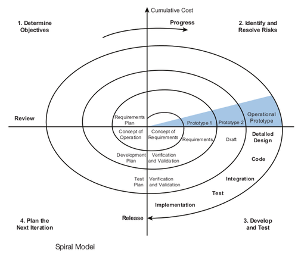

Spiraalmudel (inglise keeles Spiralmodel) on üks iteratiivseid arendusmudeleid, kus
tarkvara Arendusprotsess toimub inkrementaalselt mitme erineva korduste sooritamisega.
Iga kordus erineb eelnevast kordusest, näiteks esimene kordus võib olla seotud süsteemi
teostatava uusimisega, järgmine kordus võib tegeleda nõudmiste kirjeldamisega, ning sellele
järgnev kordus võib tegeleda kavandamisega jne.
Iga kordus jaotatud 3 kuni 6 sektorisse, mille töömahukus ei pruugi olle ühesugune, kus
Iga kordus algab lähema eesmärgi kavandamisega ja riskide hindamisega ja peab lõppema
eesmärkide täitumisega.
Selle mudeli kõige olulisem erinevus teistest mudelitest on riskide arvestamine. Riskid
võivad täitumise tõttu lükata tähtaja edasi ja ületada maksumust. Seepärast peab riskidega
arestama ning midagi ettevõtma nende vältimiseks.
Spiraalmudelil võib olla 3 kuni 6 sektorid, mille töömahutus ei pruugi olla samasugused.
Barry Boehm kes kirjeldas spiraalmudelit esimest korda oma 1986 a. artiklis. Seal ta tõi esile
neli sektroreid: Eesmärkide seadmine, Riskide hindamine ja maandamine, Arendus ja validerrimine
ning Planeerimine.
Sektori ülesanne on määratleda faaside ehk korduste eesmärgid, piirangud, juhtimisplaan,
võimalikud riskid ning alternatiivsed strateegiad lähtudes riskidest.
Iga leitud riski jaoks tehakse analüüs ja võetakse midagi ette riskide vähendamiseks.
Näiteks luuakse riski analüüsimiseks prototüüp, mille tulemuste leidmisel tehakse järgmised
otsused.
Valitakse arendusmudel lähtudes eelnevate prototüüpide tulemustest. Selle abil on võimalik
teha valiku mis aitab vähendada riske.
Tehakse tulemuse järgi otsus kas jätkata järgmise kordusega, kui otsustatakse jätkata,
tehakse järgmise faasi jaoks plaan.

eõpearhiiv Allikad (eucip)